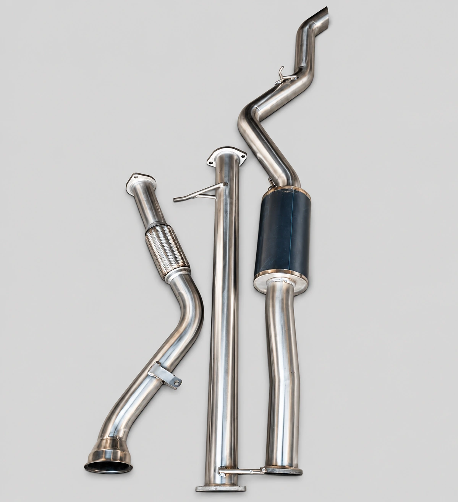
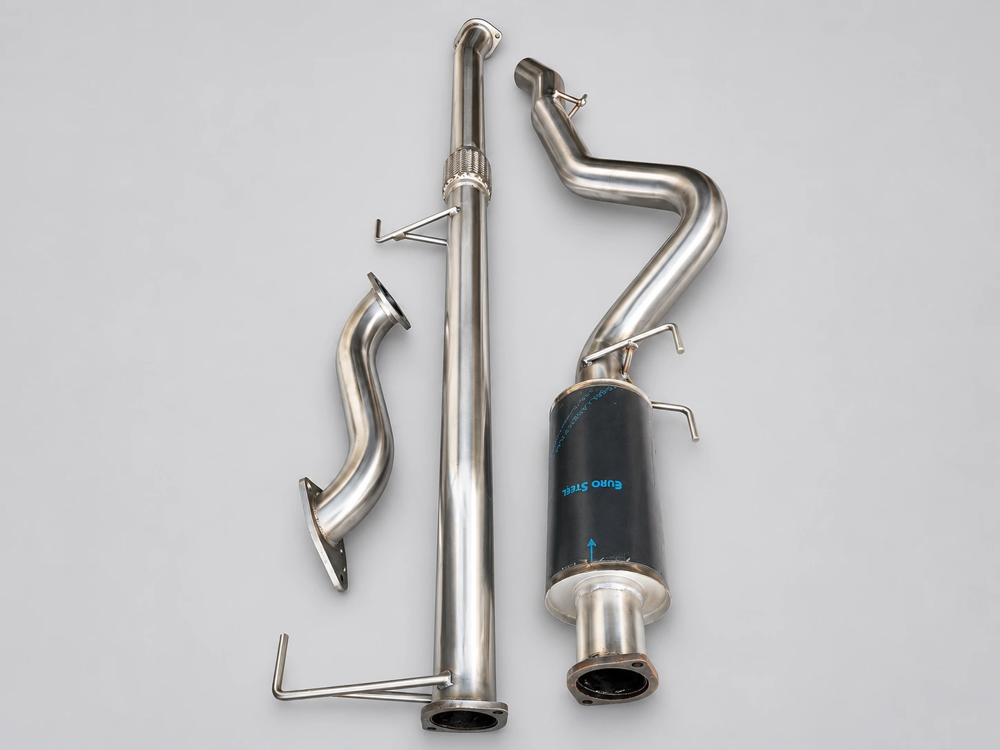
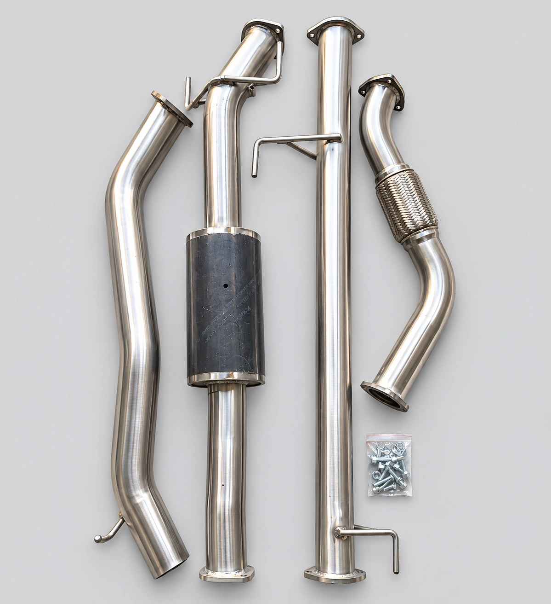
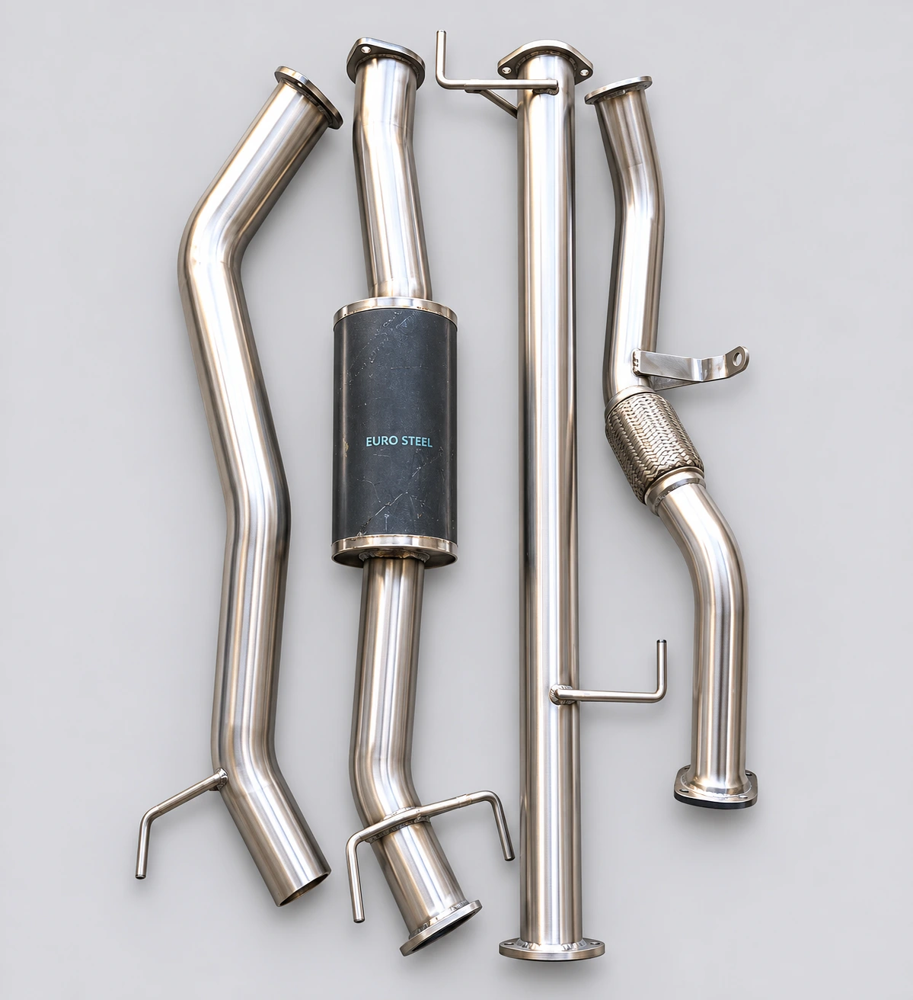

ALCOR TRADING / PERFORMANCE PARTS
PERFORMANCE EXHAUST SYSTEMS.
Explore our range of performance exhaust systems.
Our Performance Exhaust Systems

Ford Ranger T9 2.0 Bi-Turbo Exhaust System
VEHICLE APPLICATIONS
- Ford Ranger T9: 2.0 Bi-Turbo
Please confirm vehicle model, year and engine configuration before ordering.
Enquire via WhatsApp
Isuzu 3.0 D-Max Exhaust System
VEHICLE APPLICATIONS
- Isuzu D-Max: 3.0
Please confirm vehicle model, year and engine configuration before ordering.
Enquire via WhatsApp
Toyota Hilux D4D 3.0 Exhaust System
VEHICLE APPLICATIONS
- Toyota Hilux D4D: 3.0
Please confirm vehicle model, year and engine configuration before ordering.
Enquire via WhatsApp
Toyota Hilux GD6 2.4/2.8 Exhaust System
VEHICLE APPLICATIONS
- Toyota Hilux GD6: 2.4
- Toyota Hilux GD6: 2.8
Please confirm vehicle model, year and engine configuration before ordering.
Enquire via WhatsApp